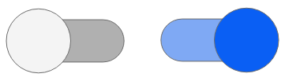
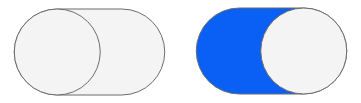

The switch button widget is an on/off switch, consisting of two mutually exclusive choices or states.
Windows / Linux / Android

Mac / iOS

A switch button widget can be created by dragging it out from the Tools Palette, where it appears with the following icon:
Alternatively it can be created in script using:
create widget as "com.livecode.widget.switchbutton"
The switch button state is reflected in its hilite property. When
the switch is clicked, or the property is set through script, the value
of the hilite changes accordingly and the widget's appearance changes
to reflect the value.
Setting the theme of the header bar to "Android" or "iOS" will
temporarily display it using the metrics of the chosen platform. This
property is transient - it is not saved with the stack as it uses the
appropriate mobile theme for the platform is is running on.